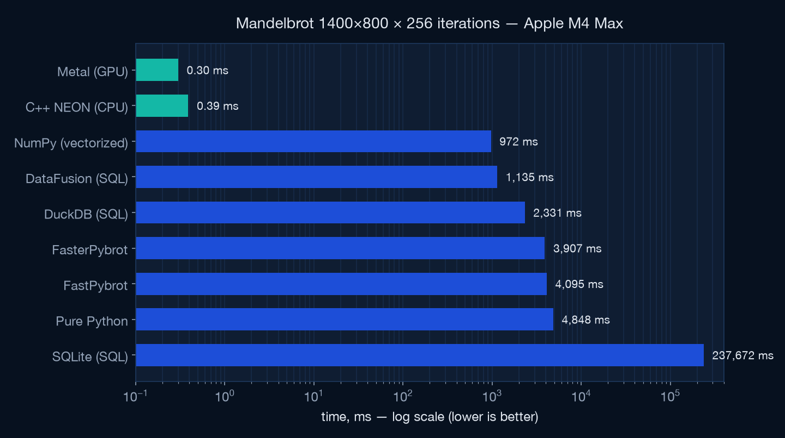
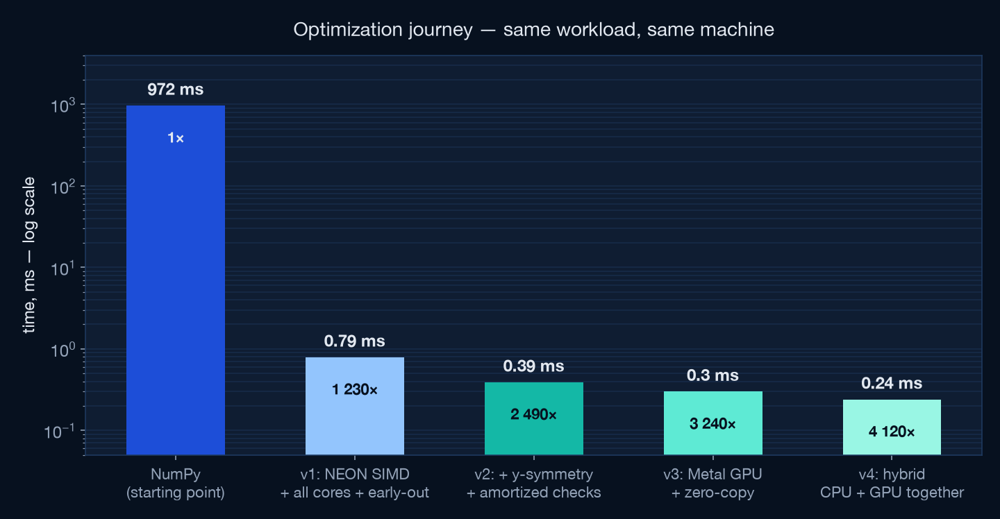
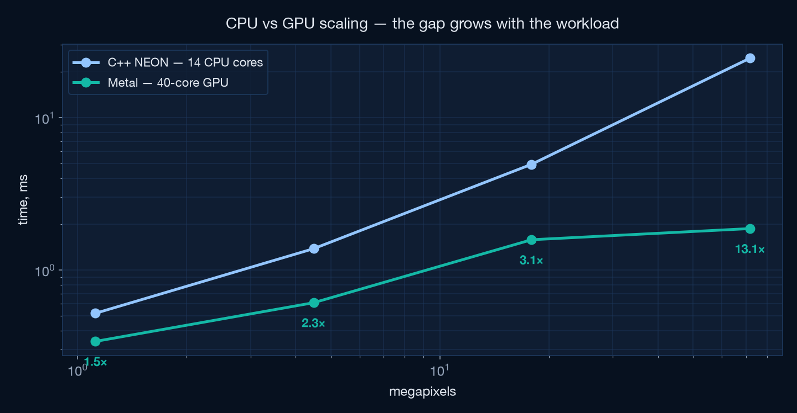
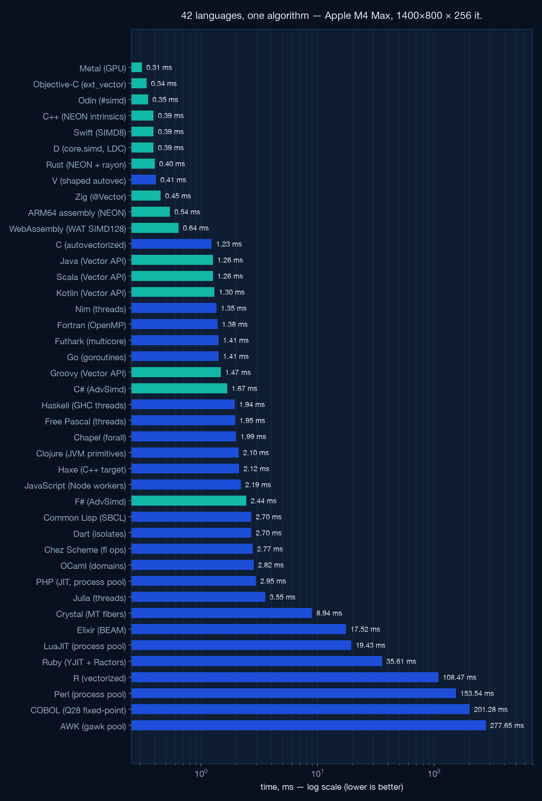

The same Mandelbrot workload. The same machine. What changes is how much of the M4 Max you actually use — SIMD lanes, all 14 CPU cores, algorithmic symmetry, and finally the 40-core GPU. Every step measured, verified, and documented below.
Peak performance on Apple Silicon isn't one trick — it's refusing to leave any of the M4 Max's execution resources idle.
Four float32 lanes per instruction on every core, with fused multiply-add and branch-free lane masking.
dispatch_apply fans work across performance and efficiency cores with work-stealing — no thread-pool code.
Thousands of threads for embarrassingly parallel math, shaders compiled at runtime from source.
One physical memory. The GPU writes, the CPU reads the very same bytes — no PCIe transfer, no staging buffers.
The repository benchmarks SQL engines (recursive CTEs!), Python and NumPy against native code. Same fractal, same escape semantics — from 45 seconds to a third of a millisecond.

Escape-time Mandelbrot: iterate z = z² + c per pixel until |z|² > 4.
Simple to state, brutal to make fast — the loop is a serial dependency chain with unpredictable exit.
A dylib built at first import with clang++ -O3 -mcpu=apple-m4, called from Python via
ctypes. The compiler schedules for the M4's real pipeline widths and latencies. Build cost paid once, outside the timed path.
The escape loop runs on float32x4_t vectors. Escaped lanes are masked out branch-free;
iteration counts accumulate by subtracting the all-ones comparison mask. float32 over float64 doubles
the lanes — at this zoom the pixel pitch is ~10⁴ ulp of f32, so precision is ample (verified: 99.8 % of pixels within ±1 iteration of the f64 reference).
float32x4_t zr2 = vmulq_f32(zr, zr), zi2 = vmulq_f32(zi, zi);
active = vandq_u32(active, vcleq_f32(vaddq_f32(zr2, zi2), four));
count = vsubq_u32(count, active); // +1 where lane still alive
zi = vmlaq_f32(ci, vmulq_f32(two, zr), zi); // fused 2·zr·zi + cidispatch_apply spreads rows across P- and E-cores with built-in work-stealing.
Two profiler-enforced findings: QOS_USER_INTERACTIVE was 4× worse than USER_INITIATED for this
workload, and the pool is warmed by a tiny dispatch at import so the first timed call doesn't pay
thread-creation latency.
Points inside the main cardioid and period-2 bulb never escape — and they're the most expensive pixels, burning all 256 iterations. Both regions have closed-form membership tests: a handful of FLOPs replaces 256 iterations, evaluated vectorized before the loop.
// q·(q + (cr − ¼)) ≤ ¼·ci² → inside main cardioid
float32x4_t q = vmlaq_f32(ci2, crm, crm);
uint32x4_t in_set = vcleq_f32(vmulq_f32(q, vaddq_f32(q, crm)),
vmulq_f32(quarter, ci2));z = z² + c is a serial dependency chain — one 4-lane chain can't fill the M4's SIMD pipes.
Interleaving two independent vector groups (8 pixels) keeps the FMA units busy while each chain waits
on its own latency. Measured: G=1 → 0.71 ms, G=2 → 0.39 ms, G=3 → 0.46 ms (register pressure wins).
The viewport is symmetric about the real axis, and conj(z² + c) = conj(z)² + conj(c) — with
IEEE negation being exact, escape counts are bit-identical for mirrored rows. Compute the top half,
memcpy the rest. The best optimization in the whole project is a line of mathematics.
The horizontal reduce (vmaxvq_u32) + branch asking "any lane alive?" serializes the loop.
It now runs every 4th iteration. Per-lane masking stays exact — dead lanes idle through up to 3 wasted
iterations, and inf/NaN comparisons can never resurrect them.
The MSL kernel ships as a source string — newLibraryWithSource compiles it at import, no
offline toolchain. One thread per top-half pixel; each writes its pixel and the mirrored one.
The cardioid early-out returns whole 32-wide SIMD groups early in bulk regions.
kernel void mandel(device ushort *out [[buffer(0)]],
constant uint4 &p [[buffer(1)]],
uint2 gid [[thread_position_in_grid]])
{
// … escape loop …
out[gid.y * w + gid.x] = (ushort)it;
out[(h - 1 - gid.y) * w + gid.x] = (ushort)it; // mirror row
}The GPU writes into a StorageModeShared buffer; Python receives a numpy view of the same
physical memory. No 2.2 MB memcpy, no staging, hazard tracking off — waitUntilCompleted
is the only synchronization. This is the Apple Silicon advantage discrete GPUs can't match at small sizes.
Swept 32×4 / 32×8 / 32×16 / 32×32 threadgroups: flat through 16, clear regression at 32 (occupancy). Shipped 32×8 = 256 threads per group, matching Apple's guidance — but only after the sweep confirmed it.

A Metal dispatch carries a fixed ~0.2 ms command-buffer cost. At sub-millisecond workloads the 14-core CPU is nearly even; scale up and the 40-core GPU runs away.
| Workload | C++ NEON · 14 cores | Metal · 40-core GPU | GPU advantage |
|---|---|---|---|
| 1400×800 (1.1 Mpx) | 0.52 ms | 0.34 ms | 1.5× |
| 2800×1600 (4.5 Mpx) | 1.38 ms | 0.61 ms | 2.2× |
| 5600×3200 (18 Mpx) | 4.94 ms | 1.58 ms | 3.1× |
| 11200×6400 (72 Mpx) | 24.5 ms | 1.87 ms | 13.1× |
| 1400×800 @ 4096 iter | 3.05 ms | 0.80 ms | 3.8× |

Same SIMD strategy, same early-outs, same symmetry, same escape semantics — reimplemented in twelve languages to separate language speed from algorithm speed.

Performance engineering is empirical. These all sounded right and measured wrong.
"Highest priority = fastest," right? Median regressed 4× vs USER_INITIATED. The scheduler knows things you don't.
More chains in flight should hide more latency — but past G=2, register pressure and spills beat the gains.
Maxing threadgroup size cost measurable occupancy. 256 threads/group won the sweep.
Until symmetry halved the work, the kernel was overhead-bound — unroll factors measured as pure noise. Fix the algorithm before polishing the loop.
Bit-exactness across restructures. v2's top half is bit-identical to v1; every ILP variant produced identical output before timing was even considered.
Accuracy vs float64. Every escaped pixel compared against the f64 reference: ≥ 99.76 % within ±1 iteration at every step (CPU f32: 99.81 %, GPU fast-math: 99.77 %). The differences live on chaotic boundary filaments.
Identical semantics. Same escape convention as the repo's Python and SQL implementations — count = iterations survived before |z|² > 4.
Honest timing. Best and median of 15–31 runs for steady state; fresh-process single calls for what a benchmark harness actually sees; contenders re-measured on an idle machine.
Everything is open source — the kernels, the harness, the charts, this page.
git clone https://github.com/jirakj/sql-mandelbrot-benchmark
# native kernels build themselves on first import
uv run python main.py # full suite — SQL engines to Metal
uv run python cppbrot.py # C++ NEON kernel (0.39 ms)
uv run python metalbrot.py # Metal GPU kernel (0.30 ms)Full write-up with every measurement: OPTIMIZATIONS.md